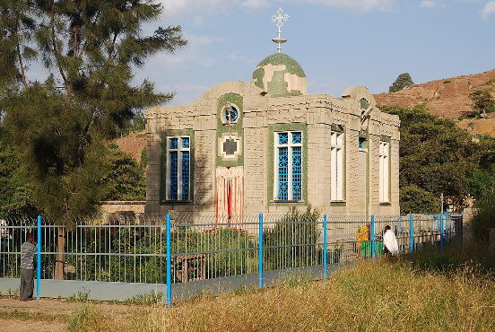

The Ark of the Covenant has been found
Shibboleth Bible software announces to the world that the Authentic Ark of the Covenant has been found.
The Ark contains the Stones with the 10 commandments written by the hand of Moses, and a container with Manna seeds, The Tabernacle complete, and other items were found.
First, how we found the Ark?.
The location is written in the Bible, the exact location of the Ark is written in the Bible.
These objects will be presented to the World soon.
Now We already suspected that the exact location was written in the Bible, so let's begin with the last time the ark was mentioned in the Bible
2 Maccabees 2:4-10
It was also contained in the same writing, that the prophet, being warned of God, commanded the tabernacle and the ark to go with him, as he went forth into the mountain, where Moses climbed up, and saw the heritage of God.
And when Jeremy came thither, he found an hollow cave, wherein he laid the tabernacle, and the ark, and the altar of incense, and so stopped the door.
And some of those that followed him came to mark the way, but they could not find it.
Which when Jeremy perceived, he blamed them, saying, As for that place, it shall be unknown until the time that God gather his people again together, and receive them unto mercy.
So Jeremiah hid the Ark in a Cave, with the ark is also the Tabernacle, that is the last thing the Bible says about the location of the Ark.
But God also wrote in the Bible the Current location of the Ark.
But is not written as text but as a Parable that only would be revealed when The Lord wanted to gather his people.
The Parable explains what happened to the Ark after it was buried, and its final location today.
The Parable
Jeremiah 38 4:6
Therefore the princes said unto the king, We beseech thee, let this man be put to death: for thus he weakeneth the hands of the men of war that remain in this city, and the hands of all the people, in speaking such words unto them: for this man seeketh not the welfare of this people, but the hurt.
Then Zedekiah the king said, Behold, he is in your hand: for the king is not he that can do any thing against you.
Then took they Jeremiah, and cast him into the dungeon of Malchiah the son of Hammelech, that was in the court of the prison: and they let down Jeremiah with cords. And in the dungeon there was no water, but mire: so Jeremiah sunk in the mire.
.
So Jeremiah represents the Ark, Jeremiah was buried in the Well, like the Ark was buried in the Cave.
But the location of the Ark?
Jeremiah 38 7:13
Now when Ebedmelech the Ethiopian, one of the eunuchs which was in the king's house, heard that they had put Jeremiah in the dungeon; the king then sitting in the gate of Benjamin;
Ebedmelech went forth out of the king's house, and spake to the king saying,
My lord the king, these men have done evil in all that they have done to Jeremiah the prophet, whom they have cast into the dungeon; and he is like to die for hunger in the place where he is: for there is no more bread in the city.
Then the king commanded Ebedmelech the Ethiopian, saying, Take from hence thirty men with thee, and take up Jeremiah the prophet out of the dungeon, before he die.
So Ebedmelech took the men with him, and went into the house of the king under the treasury, and took thence old cast clouts and old rotten rags, and let them down by cords into the dungeon to Jeremiah.
And Ebedmelech the Ethiopian said unto Jeremiah, Put now these old cast clouts and rotten rags under thine armholes under the cords. And Jeremiah did so.
So they drew up Jeremiah with cords, and took him up out of the dungeon: and Jeremiah remained in the court of the prison.
NOTICE THAT JEREMIAH WICH REPRESENTS THE ARK, IS RAISED AS THE ARK WOULD BE RAISED BY THE ARMHOLES.
Ebed-Melek who was the Ethiopian Ambassador , took the Ark from the Cave to Ethiopia.
So the Ark is in Ethiopia.
Where Exactly?
Here:

The final part of the Parable (the field).
Jeremiah 32:6-14
And Jeremiah said, The word of the Lord came unto me, saying,
Behold, Hanameel the son of Shallum thine uncle shall come unto thee saying, Buy thee my field that is in Anathoth: for the right of redemption is thine to buy it.
So Hanameel mine uncle's son came to me in the court of the prison according to the word of the Lord, and said unto me, Buy my field, I pray thee, that is in Anathoth, which is in the country of Benjamin: for the right of inheritance is thine, and the redemption is thine; buy it for thyself. Then I knew that this was the word of the Lord.
And I bought the field of Hanameel my uncle's son, that was in Anathoth, and weighed him the money, even seventeen shekels of silver.
And I subscribed the evidence, and sealed it, and took witnesses, and weighed him the money in the balances.
So I took the evidence of the purchase, both that which was sealed according to the law and custom, and that which was open:
And I gave the evidence of the purchase unto Baruch the son of Neriah, the son of Maaseiah, in the sight of Hanameel mine uncle's son, and in the presence of the witnesses that subscribed the book of the purchase, before all the Jews that sat in the court of the prison.
And I charged Baruch before them, saying,
Thus saith the Lord of hosts, the God of Israel; Take these evidences, this evidence of the purchase, both which is sealed, and this evidence which is open; and put them in an earthen vessel, that they may continue many days.
For thus saith the Lord of hosts, the God of Israel; Houses and fields and vineyards shall be possessed again in this land.
The Ark of the Covenant has this documentation, This is the Documentation for the Establishment of the KINGDOM OF GOD. It has also been found.
We will add more information soon. inform the Churches of this founding.